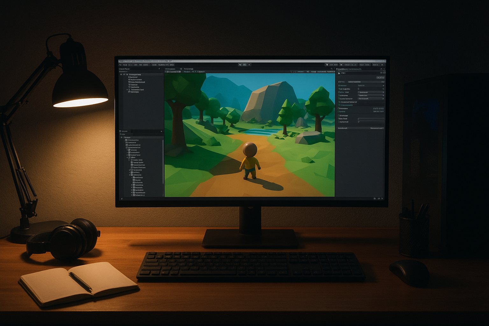
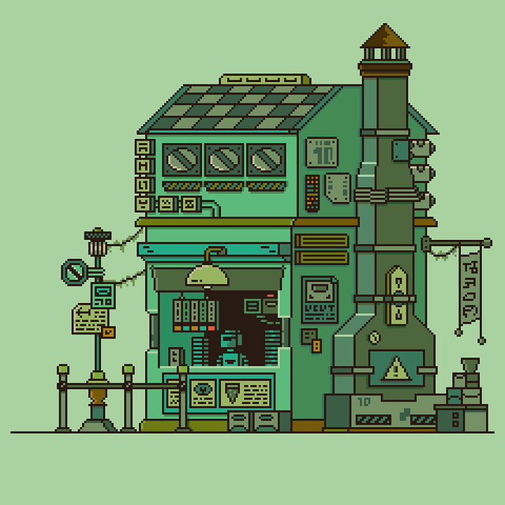

What is Game Development?
Game development is the process of designing, creating, testing, and releasing interactive digital experiences. It combines programming, art, design, audio, and storytelling to produce games across platforms like PC, consoles, mobile, and web.
A game project can be a solo hobby project or a multi-disciplinary team effort. Even small prototypes teach essential skills: version control, debugging, asset management, and iterative design.
Popular Engines & Tools
Choosing the right engine depends on your goals. Beginner-friendly engines like Godot and Unity have strong communities and tutorials; Unreal Engine is common for high-fidelity 3D games; Phaser and Pygame are great for 2D & learning code concepts.
- Unity — flexible, lots of tutorials and assets
- Godot — lightweight, open-source, great for 2D
- Unreal Engine — high-end 3D and visual scripting
Typical Project Workflow
A simple, repeatable workflow will keep your project moving forward. Start with a small vertical slice (a tiny playable piece of the game) before expanding features. Frequent playtesting catches problems early.
- Plan mechanics and scope (design doc or bullet list)
- Create a prototype (get something playable fast)
- Iterate, polish visuals/audio, and test
- Deploy and gather player feedback
Even short, iterative cycles (weekend prototypes) teach better than long, unfinished projects. Focus on core fun and remove features that don't improve the experience.
Where to Learn
There are tons of free and paid resources for learning game development. Start with targeted tutorials: follow a single small project from start to finish rather than jumping between topics.
Here are a few places to explore:
Tips for Beginners
Keep scope tiny for your first projects. A single mechanic done well is more valuable than many half-finished systems. Use placeholder art and polish later.
Use source control (Git), keep assets organized, and comment code. Joining local or online game jams is a great way to force scope and meet collaborators.
- Prototype first, polish later
- Keep builds playable — test often
- Share builds early for feedback